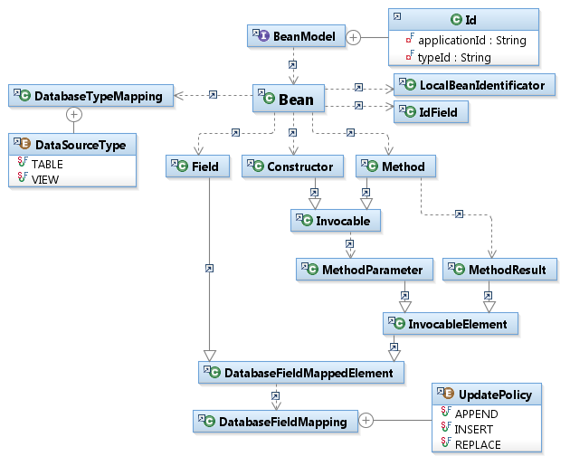
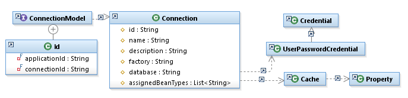

Table of Contents
List of Figures
List of Tables
This book is produced by the Wikbook tool. Wikbook is an open source project for converting wiki files into a set of docbook files.
DaoJones is designed for accessing databases by mapping Java objects to database entities. As distinguished from JDBC or JPA, DaoJones is not restricted to relational databases.
The project was initially founded in 2007 as part of the ARS Website project. The main purpose at that time was to encapsulate accesses to the website database - which is a Notes database - in a separate layer to make the business entities independent from the Notes Java API. This allowed to implement thread safety at a central position and to make this available for the whole application.
By now, DaoJones is used by multiple ARS-internal projects (e.g. the Unterlagengenerierung ) and by currently a single customer project too.
The name DaoJones is derived from the abbreviation DAO, which is used for Data Access Objects, a design pattern used for persistence implementations. The term is not used anymore, it was replaced by a simple POJO, briefly called bean.
Although it allows to use different database drivers, currently there is only one driver implementation to access Notes databases. Further drivers must yet be implemented.
The framework is intented to be used by Java applications to map business entities to databases, no matter what kind of database (relational, document-based, object-based, file-based) is used at runtime. The database can be replaced without any changes within the application code. The developer can handle the concepts and terms of DaoJones and does not have to get familiar with database-specific concepts and terms.
Table of Contents
This chapter names and describes basic concepts and terms that should be known to understand the functionality of the framework.
The most important concept is the mapping of beans to an artifact within the database. The following graphic shows the mapping between a Java bean and a Notes document. The Java bean has a class that is mapping to the Form field of the Notes document. The fields of the class are mapped to further fields of the Notes document. This mapping can be customized by annotations, an external XML file or programmatically at runtime using the Bean Model API. See chapter "Bean Model" for detailed information.
It is also possible to map a bean to a view, i.e. a selection of entities based on a query and a provision of columns based on single fields or on calculated values. Views can provide sorting and categorizing entries.
Please be aware that view columns with calculated values can only be mapped to read-only fields and therefore cannot be used for updates.
The mapping of Java and database fields or columns is not limited to strings. The following types can be used as Java field type:
Primitive types and their wrapper classes
java.lang.String
java.util.Date
Enumerations
One-dimensional Arrays or collections of these types
de.ars.daojones.runtime.beans.fields.Resource (for BLOBs, CLOBs, Attachments...) - see Section "Resources"
A database driver implementation can provide further types, but the types listed above must be provided by each driver implementation. The driver implementation decides to which types in the database those types are mapped.
The central element for initializing DaoJones is the DaoJones Context object. It provides access to the whole configuration and to the connections. See the diagram below.
The diagram shows a couple of interfaces/classes that have the following meaning:
DaoJonesContextConfig provides access to the configuration models (see "Bean Model", "Connection Model" and "Further configuration models")
ConnectionProvider is a common interface for objects that provide connections. Those connections are used to access a database with the common CRUD operations.
Application is a special ConnectionProvider derivation that represents a single application. DaoJones is designed to work for multiple applications within a single process. Those applications manage their connections by using a unique id.
DaoJonesContext provides access the the DaoJonesContextConfig and the ApplicationContext objects.
DaoJonesContextFactory is a factory class that creates DaoJonesContext objects that have pre-configured configuration models (see "Further configuration models").
The initialization of DaoJones may look like the following example:
final DaoJonesContextFactory factory = new DaoJonesContextFactory();
final DaoJonesContext ctx = factory.createContext();
try {
final Application app = ctx.getApplication("mail");
try {
final Connection<Memo> con = app.getConnection(Memo.class);
try {
// Access database
} finally {
con.close();
}
} finally {
app.close();
}
} finally {
ctx.close();
}
DaoJonesContext, Application and Connection implement the interface java.io.Closeable and therefore the try-with-resource block (new feature of Java7) can be used.
final DaoJonesContextFactory factory = new DaoJonesContextFactory();
try (final DaoJonesContext ctx = factory.createContext()) {
try (final Application app = ctx.getApplication( "mail" )) {
try(final Connection<Memo> con = app.getConnection( Memo.class )) {
// Access database
}
}
}
The bean model describes the mapping of Java beans to database entities. You can access the bean models via
final BeanModelManager bmm = ctx.getConfiguration().getBeanModelManager();
final Collection<BeanModel> models = bmm.getModels();
or, to read only a single bean, via
final String app = "mail";
final Id id = new Id(app, Memo.class.getName());
final BeanModel model = bmm.getModel(id);
The diagram below shows the main artifacts of the bean model. 
The following statements can be read out from this diagram:
A bean model is uniquely identified by the qualified name of the Java type and the name of the application. So it is possible to map the same class twice using different applications.
A bean type is mapped to a table (Notes: document) or a view.
There are multiple types of elements that can be mapped to a database field:
Fields are injected while reading from the database. They are read out while storing values into the database.
Method parameters are injected while reading from the database. The method then is invoked with the parameter values. It is possible to use multiple annotated parameters for a single method. There is no ordering of method invocations.
Constructor parameters are treated similarly with the exception of the time and the multiplicity. There can be only one constructor with annotated parameters. If there isn't any constructor with annotated parameters, the default constructor must be provided.
Method results are read out while storing values into the database. The method then is invoked. Currently, such methods must not have any parameters.
So the Memo type could map the sender field like this:
@Field( value = "From", id = "sender" )
public String getSender() {
// Calculate sender
return sender;
}
public void setSender( @FieldRef( "sender" ) final String sender ) {
// Process sender
}
It is recommended to map fields to the database, because they are not restricted to read-only or write-only access and imply the simplest solution. The mapping of parameters or return values of methods could be used for
information that is processed, but not stored within the bean, e.g. some kind of attachment
multiple values that need to be combined and handled together
final fields (constructor parameters)
Be aware that the bean model does not make any provisions for inheritation and interface implementations. It is possible to map elements of interfaces and abstract classes with the bean model, but it is only allowed to access the database using a concrete type. To get all mapped elements of a type (in consideration of overwritten elements), you can use
final BeanModel model = bmm.getEffectiveModel(app, Memo.class);
The declaration of the bean model with the usage of annotations is only one possibility. You can also define the mappings programmatically and with XML files. Here's a short example:
<beans-config xmlns="http://www.ars.de/daojones/2.0/beans">
<bean type="de.ars.daojones.example.mails.Memo">
<type-mapping name="Memo"/>
<field name="sender">
<field-mapping name="From"/>
</field>
</bean>
</beans-config>
The connection model describes the connections to the databases that are accessed by the DaoJones runtime. You can access the configuration model via
final ConnectionModelManager cmm = ctx.getConfiguration().getConnectionModelManager();
cmm.getModels();
or, to read only a single connection, via
final String app = "mail";
final String connectionId = "memo";
final Id id = new Id(app, connectionId);
final ConnectionModel model = cmm.getModel(id);
The diagram below shows the main artifacts of the connection model. 
You should know:
A connection model is uniquely identified by the name of the application and the id of the connection.
The id of the database driver is assigned as an attribute of a connection. The path to the database is driver-specific.
During runtime, the connection is determined by the name of the application and the type of the bean. Therefore, each connection model has a list of type names assigned. There is also a default flag. The default connection of an application is used for all bean bean types that are not explicitely assigned to any other connection.
There is a built-in-support for cached connections. Cache drivers can be used to minimize database accesses.
The declaration of the connection model can be defined programmatically and with XML files. Here's a short example:
<configuration xmlns="http://www.ars.de/daojones/2.0/connections">
<connection factory="de.ars.daojones.drivers.notes" id="memo" name="Email Inbox">
<database>notes:///C1547121FC3A2141?version=1.1&type=replica&server=acme.com</database>
<credential type="static">
<property name="username" value="johndoe"/>
<property name="password" value="mysecret"/>
</credential>
<for-class>de.ars.daojones.example.mails.Memo</for-class>
</connection>
</configuration>
There are further models available through the DaoJonesContextConfig object.
ConnectionFactoryModel and CacheFactoryModel provide driver implementations for database access and caching. They are typically registered by the driver itself using the Java ServiceLoader API.
ApplicationModel is not required. It provides the possibility to describe an application for logging or prospecting purposes. Connection and bean models can be requested for application names that are described by an ApplicationModel.
Table of Contents
This chapter describes the first steps for implementing a DaoJones based application.
Before you can access the database, you need to set up your environment.
The following description only deals with a simple Java SE environment. Further steps can be neccessary when running your application in another environment. See the chapter "Integration into Java Environments" for further details.
Classpath Configuration: Aside from the DaoJones runtime, the database drivers need to be in the application's classpath. If a driver registers itself using the Java ServiceLoader API, no further steps for registration are neccessary.
Connection Configuration: It is recommended to do this using an XML file. See the example below. The XML file should be in the application's classpath.
<configuration xmlns="http://www.ars.de/daojones/2.0/connections">
<connection factory="de.ars.daojones.drivers.notes" id="memo" name="Email Inbox">
<database>notes:///C1547121FC3A2141?version=1.1&type=replica&server=acme.com</database>
<credential type="static">
<property name="username" value="johndoe"/>
<property name="password" value="mysecret"/>
</credential>
<for-class>de.ars.daojones.example.mails.Memo</for-class>
</connection>
</configuration>
The example shows a static kind of credential, where username and password are placed into the XML. If you need any dynamic way of finding a credential (e.g. to use a token or to request the user to input the credentials), implement a custom javax.security.auth.callback.CallbackHandler and use it as shown in the example below. See Section "JAAS Integration using the Notes Driver" for detailed information.
<configuration xmlns="http://www.ars.de/daojones/2.0/connections">
<connection factory="de.ars.daojones.drivers.notes" id="memo" name="Email Inbox">
<database>notes:///C1547121FC3A2141?version=1.1&type=replica&server=acme.com</database>
<credential type="generic">
<property name="class" value="your.callbackhandler.implementation.Class"/>
</credential>
<for-class>de.ars.daojones.example.mails.Memo</for-class>
</connection>
</configuration>
Application Initialization: In an unmanaged environment, you need to create the DaoJonesContext and read the connection manually. This is done with the following steps:
Create an instance of DaoJonesContextFactory.
final DaoJonesContextFactory factory = new DaoJonesContextFactory();
Add a ConfigurationSource for reading bean models to the DaoJonesContextFactory. The example uses annotations to map the elements of the bean types to the database.
// Configure Bean Model (scan classpath for annotations)
final String application = "mail-application";
final ConfigurationSource beanConfig = new AnnotationBeanConfigurationSource(
application);
factory.setConfigurationSources(beanConfig);
Add a ConfigurationSource for reading connection models to the DaoJonesContextFactory. The example uses an XML-file-based configuration.
// Configure Connections
final URL connectionConfigURL = Memo.class.getResource("daojones-connections.xml");
final ConfigurationSource connectionConfig = new XmlConnectionConfigurationSource(
application, connectionConfigURL);
factory.setConfigurationSources(connectionConfig);
Create the DaoJonesContext. The configurations are read and the context is configured. Then get the Application object and the connection.
// Create DaoJones Context
final DaoJonesContext ctx = factory.createContext();
try {
final Application app = ctx.getApplication(application);
try {
// Find connection for Memo type
final Connection<Memo> con = app.getConnection(Memo.class);
try {
// Access database
} finally {
con.close();
}
} finally {
app.close();
}
} finally {
ctx.close();
}
The easiest way to define a mapping is to use annotations directly within the Java code. The following examples uses this way. The only requirement is a META-INF/daojones-beans.xml file within the project. It is also possible to use an XML-file-based mapping (see chapter "Bean Model"). This could be an option, if
You don't want classpath dependencies to DaoJones annotations within your beans.
You need to define a mapping of a bean that is part of an external library.
You need to define multiple mappings of your beans. In this case, use multiple applications (Application). Of course, you can use both possibilities in combination.
At first, you map the bean type to a table (Lotus Notes: Document) or to a view. Use the @DataSource annotation to declare the name of the table or view. The @DataSource annotation is optional. If there isn't any annotation, the bean type is mapped to a table that has the simple class name of the bean type. Here are some examples
A mapping to the table Memo. In this example, you could remove the @DataSource annotation because the bean type has the same simple name like the table.
@DataSource( "Memo" )
public class Memo {
// ...
}
A mapping to a view Memos:
@DataSource( value = "Memo", type = DataSourceType.VIEW )
public class Memo {
// ...
}
A mapping to a view Memo, which has the same name like the bean type:
@DataSource( type = DataSourceType.VIEW )
public class Memo {
// ...
}
You can declare a mapping to a column of a table or view by using the @Field annotation. There are multiple types of elements that can be mapped to a database field:
Fields are injected while reading from the database. They are read out while storing values into the database.
// field mapping to a field with a same name @Field private String firstName;
// field mapping to a field with a different name @Field( "given" ) private String firstName;
Method parameters are injected while reading from the database. The method then is invoked with the parameter values. It is possible to use multiple annotated parameters for a single method. There is no ordering of method invocations.
public void setFirstName( @Field( "firstName" ) final String firstName ) {
// ...
}Of course, this is not limited to setter methods with a single parameter.
public void init( @Field( "firstName" ) final String firstName,
@Field( "lastName" ) final String lastName ) {
// ...
}Constructor parameters are treated similarly with the exception of the time and the multiplicity. There can be only one constructor with annotated parameters. If there isn't any constructor with annotated parameters, the default constructor must be provided.
public Person( @Field( "firstName" ) final String firstName ) {
// ...
}Method results are read out while storing values into the database. The method then is invoked. Currently, such methods must not have any parameters.
@Field( "firstName" )
public String getFirstName() {
// ...
}If you have two methods (one for reading, one for writing a value), you can refer the field mapping by using the @FieldRef annotation.
public void setFirstName( @Field( value="firstName", id="fn" ) final String firstName ) {
// ...
}
@FieldRef( "fn" )
public String getFirstName() {
// ...
} The name of the field should always be specified for method parameters and results. The @Field annotation declares default values for them, but they can only be derived from the method's name and the index (not the name!) of the parameter. For details, see the Javadocs of the @Field annotation.
The Connection interface defines the CRUD operations with a vararg parameter, i.e. you can execute these operations with multiple beans of the same type with a single invocation.
A CRUD operation is not executed as a transaction. DaoJones currently does not support transactions.
CREATE Just create an instance of your bean and invoke the update() method.
final Memo newMemo = new Memo();
// ... (invoke setter)
con.update(newMemo);
READ DaoJones provides a sophisticated query mechanism. For detailed information see chapter "Queries".
final SearchResult<Memo> result = con.findAll(query);
try {
for (final Memo memo : result) {
// ...
}
} finally { // Closeable implementation
result.close();
}
UPDATE If you invoke the update() method on a bean that you read from the database before, it is updated.
con.update(memo1, memo2);
DELETE
con.delete(memo);
or shorter (to avoid loading objects from the database) - for detailed information see chapter "Queries".
con.delete(query);
If you want to write to the database by invoking the update() or delete() method, it is neccessary for the runtime to identify the objects within the database. See chapter "Bean Identification" for detailed information.
One important feature of DaoJones is its Query API. This API allows to create database queries based on the bean mappings and with the help of Java interfaces and classes. You do not have to build a query string, you create a Query object. Syntax errors are prevented by the Java compiler.
final Query query = Query.create();
final SearchResult<Memo> result = connection.findAll(query);
The result object implements the Iterable interface and can be read out with a simple for loop. This follows the lazy-initialization pattern, i.e. that the information is loaded during iterating through the results.
for (final Memo memo : result) {
// use the memo
}
It is also possible to get all objects loaded immediately into a list. Be aware that this can have effect to the performance or memory allocation of your application.
// Get all objects.
final List<Memo> memos = result.getAsList();
// Get only the objects at index 10 (including) to 20 (excluding).
final List<Memo> memosSub = result.getAsList(10, 20);
The result object also implements the Closeable interface and can be used with the try-with-resource statement that was introduced with Java 7.
The Query class allows further query parameters like the maximum count of results or the super types of the bean type that should be loaded from the database. This can be done with a single line of code by the usage of Chained Calls. If not specified, the maximum number of results is Integer.MAX_VALUE and all subclasses of the bean type are loaded.
final Query query = Query.create() // default values
.only(10) // maximum count of results
.only(TextMemo.class, HtmlMemo.class) // sub types
.only(searchCriterion); // search criteria
Search criteria are query parameters that select database entries that match a given rule. DaoJones defines a SearchCriterion interface and provides implementations of the most common criteria.
Tautology is a criterion that is always true. You can use this criterion to avoid null values and to combine it with other criteria.
Negation is a criterion that switches another criterion as a not operator does.
LogicalCombination is a combination of 2 criteria using an and or or. There are utility methods that allow to combine more than 2 criteria, but those helper methods create multiple logical combinations.
IsEmpty and FieldComparison address a single field within the database. IsEmpty matches in case of an empty field, i.e. a null value, an empty string, an empty collection or an empty array. FieldComparison is a very flexible criterion that allows to compare a single field value. Comparisons are possible for strings, numbers, dates, booleans and collections.
It is possible to implement custom search criteria and to extend the FieldComparison criterion by custom comparisons (see Section "Custom Search Criteria").
You can create instances of this classes directly or you can use the SearchCriterionBuilder classes that provides some static helper methods to create search criteria with a chained call.
import static de.ars.daojones.runtime.query.SearchCriterionBuilder.*;
// ...
final Query query = Query.create().only(
field( "subject" ).asString().contains( "IMPORTANT" )
.and().
field( "sender" ).asCaseInsensitiveString().startsWith( "max." )
);
You can use a search criterion to test conditions on a bean that was already loaded from the database. Therefore, you can use the matches method. You have to retrieve the ApplicationContext from the Connectionprovider because the bean mapping is dependent from it.
final boolean isImportant =
field( "subject" ).asString().contains( "IMPORTANT" ).matches( ctx, memo );
And the Search Criteria API implements the Visitor Pattern to step through a search criterion's structure. You can build very complex search criteria by combining simple criteria by the usage of the LogicalCombination. It will result in a kind of tree structure where one node can contain one or two childs. Then, it can be helpful to use the Visitor Pattern to deal with this structure in a generic way.
criterion.accept( new SearchCriterionVisitor() {
@Override
public boolean preVisit( final SearchCriterion criterion ) {
// ... do something with the criterion
return true; // use false to cancel visiting children
}
});To modify database entries, it is neccessary for DaoJones to find the corresponding entry of a single bean within the database. Therefore, the concept of Bean Identification was introduced. Beans, that are used to modify entries within the database, must provide an internal field that holds an identificator for the bean. This identificator is set by the database driver when the bean is loaded from the database or saved for the first time. It is read out by the driver during an invocation of update() or delete(). This field must meet some requirements:
It can be of any visibility scope. Getter or setter method is not used by the driver and therefore not neccessary.
It must not be final and cannot be injected as a method or constructor parameter. If beans are replicated or cached, it should not be transient or @XmlTransient.
It can be declared by any super type of the bean, so it is possible to have a common super type for all beans providing such an id field.
It must be of a type that allows the assignment of an object of type Identificator, so allowed types are
de.ars.daojones.runtime.beans.identification.Identificator
java.io.Serializable
java.lang.Object
It can also be declared of type java.lang.String to get a string representation of the identificator. The bean then is limited to the usage within one application, i.e. it can be mapped to a single database element. If you want to read objects from one table or view and store them into another one (including the same database or different databases), this might not fit your requirements.
It must be annotated with @Id. (or - within an XML file - declared by the <id-field> tag)
@DataSource("Training")
public class Training {
@Id
private Object id;
// ...
}It is possible to use one bean within multiple applications, where different connections are configured. You can read the bean from a database within the first application (where an identifcator is set for this application) und store it to the database within the second application. Be aware that it then is handled as a new object that leads to the creation of an entry within the database.
For customization of the default bean identification behaviour, see chapter "Custom Bean Identification".
Table of Contents
This chapter contains information about topics that you do not need in your applications by default. In some cases, extensions and customizations are necessary. The extensions supported by DaoJones are described within this chapter.
As you have already seen, you can make changes to the configuration by accessing the model managers directly or by adding configuration sources to the context factory before creating the context. There is another possibility that provides a more comfortable configuration after the context was created: the DaoJonesContextConfigurator class. This class even allows to undo a configuration very quickly.
// Create the instance
final DaoJonesContextConfigurator configurator = new DaoJonesContextConfigurator(
djContext);
// Configure the context by specifying a single or multiple configuration sources
final ConfigurationHandle handle = configurator.configure(configurationSource);
try {
// do anything else... (access the database)
} finally {
// deconfigure the context
configurator.deconfigure(handle);
// BE AWARE: the handle is not valid anymore, do not use it again
}
If you specify the field mapping for a bean that is mapped to a view, the name of the field is interpreted as the title of the column of the view. Alternatively, you can map to the index of the column within the view - ?0 for the first column, ?1 for the second and so on.
@DataSource(value = "Authors", type = DataSourceType.VIEW)
public class Author {
@Field("?0")
private String surname;
@Field("?1")
private String givenname;
}Views are restricted. For example, they cannot provide resources. Beans are only updateable if their writeable fields are only mapped to columns that are not calculated.
On the other hand, views can encapsulate a query, search faster because of an index and sort results.
Hidden columns will be addressed too, so the index of the first visible column in the view is not always ?0.
.
You can decide whether to access the view column by specifying their title or their index. In case of design changes, it matters if the title of a column was changed, or columns were inserted or deleted. It is recommended only to map the bean type to a technical view that is not displayed in the Notes UI. The Notes designer then can change all UI views, but must be careful with changes to technical views.
.
Databases often allow to store large binaries (BLOBs) and characters (CLOBs). Lotus Notes documents can contain attachments. DaoJones provides a Resource interface to read and write such data. You just need to declare a field mapping to a parameter or method result with this type.
public void processAttachment(@Field("attachment1") final Resource attachment)
throws IOException {
final long size = attachment.getLength();
final InputStream in = attachment.getInputStream();
// Process InputStream
}
It is not recommended to map instance variables of this type, because resources can allocate a big size of memory. Furthermore, resources are not Serializable by default. And they are not liable to be accessible after reading the bean during query result iteration.
If you want to buffer a resource as an instance variable within your bean, you can use the type de.ars.daojones.runtime.beans.fields.BufferedResource.
There are default implementations of the Resource interface to easily store small BLOBs/CLOBs/attachments to the database.
@Field("attachment1")
public Resource createAttachment1() {
return new StringResource("This is my sample text.", "SampleText.txt");
}
@Field("attachment2")
public Resource createAttachment2() {
return new ByteArrayResource(new byte[] { 19, 50, 1, 0, 8 }, "SampleImage.jpg",
"image/jpg");
}If you map an instance variable, a parameter or a method result to a database field, the database value is converted automatically to the Java type. This behaviour must be customized when the default conversion does not match your requirements or you use custom data types that DaoJones is not able to convert to. Therefore, you can implement custom converters by extending the TypeConverter class and customizing your field mapping.
public class PersonConverter extends TypeConverter<String, Person> {
@Override
protected Person toPropertyValue(final LoadContext context, final String value)
throws FieldAccessException {
final Person person = new Person();
final String[] names = value.split(" ");
person.setFirstName(names[0]);
person.setLastName(names[1]);
return person;
}
@Override
protected String toDatabaseValue(final StoreContext context, final Person value)
throws FieldAccessException {
final Person person = value;
return person.getFirstName() + " " + person.getLastName();
}
@Override
protected Class<String> getDatabaseType(final ConverterContext context) {
return String.class;
}
}@Field(value = "sender", converter = PersonConverter.class) private Person sender;
The TypeConverter converts single objects, but it can be used for arrays or collections of these objects. The TypeConverter then automatically reads and converts the array or collection by using the single object conversion methods.
During conversion, there is a ConverterContext parameter that provides information about the context of the conversion. It is possible to get details about the field that is currently converted.
// Get the bean that contains the field
final Object bean = context.getBean();
// Get connection to access database during conversion
final Connection<Person> con = context.getConnectionProvider().getConnection(
Person.class);
// Get the field mapping (part of Bean Model)
final DatabaseFieldMappedElement descriptor = context.getDescriptor();
final DatabaseFieldMapping fieldMapping = descriptor.getFieldMapping();
// Get the name of the (database) field
final String field = fieldMapping.getName();
// Get the type of the target within the bean
final Class<?> targetType = context.getTargetType();
If you need to derive the name of the database field or even want to store the value into multiple database fields, you can implement the Converter interface directly. You then have the responsibility to access the database by using helper objects. It is possible to map a single bean property to multiple fields within the database.
public class PersonConverter2 implements Converter {
// Store the first name and last name into multiple fields
@Override
public void store(final StoreContext context, final Object value)
throws DataAccessException, UnsupportedFieldTypeException {
final Person person = (Person) value;
final String field = context.getDescriptor().getFieldMapping().getName();
final Property[] md = context.getMetadata();
final Writer writer = context.getWriter();
final UpdatePolicy up = UpdatePolicy.REPLACE;
writer.storeToDatabase(field + "_firstName", String.class, person.getFirstName(), up,
md);
writer.storeToDatabase(field + "_lastName", String.class, person.getLastName(), up,
md);
}
@Override
public Object load(final LoadContext context) throws DataAccessException,
UnsupportedFieldTypeException {
final Person person = new Person();
final String field = context.getDescriptor().getFieldMapping().getName();
final Property[] md = context.getMetadata();
final Reader reader = context.getReader();
person.setFirstName(reader.readFromDatabase(field + "_firstName", String.class, md));
person.setLastName(reader.readFromDatabase(field + "_lastName", String.class, md));
return person;
}
}It is possible to store a bean value to multiple database fields. It is possible to load multiple fields from the database to a single bean field. If you want to store database values into multiple bean fields, you need to use methods (e.g. a Setter) that assign the single value to multiple fields.
For custom field types, it might be easier to create common, system-wide converters. Those converters do not have to be referenced at each field of this type. They just have to get annotated with @Converts.
@Converts(Person.class)
public class PersonConverter3 implements Converter {
@Override
public void store(final StoreContext context, final Object value)
throws DataAccessException, UnsupportedFieldTypeException {
// ...
}
@Override
public Object load(final LoadContext context) throws DataAccessException,
UnsupportedFieldTypeException {
final Person person = new Person();
// ...
return person;
}
}DaoJones provides common search criteria that should meet your requirements in most cases. Nevertheless, DaoJones allows to create custom search criteria. First, you need to implement the SearchCriterion interface to provide an API for your application's classes. It is recommended to use the super class AbstractSearchCriterion.
public class IsFavorite extends AbstractSearchCriterion {
private static final long serialVersionUID = 1L;
private final Collection<URL> favorites;
public IsFavorite(final Collection<URL> favorites) {
super();
this.favorites = favorites;
}
public Collection<URL> getFavorites() {
return favorites;
}
@Override
public boolean matches(final ApplicationContext ctx, final Object bean)
throws ConfigurationException {
return favorites.contains(bean);
}
@Override
public int hashCode() {
final int prime = 31;
int result = 1;
result = prime * result + ((favorites == null) ? 0 : favorites.hashCode());
return result;
}
@Override
public boolean equals(final Object obj) {
return this == obj || getClass() == obj.getClass()
&& favorites.equals(((IsFavorite) obj).favorites);
}
}Be aware that you should overwrite equals(Object) and hashCode() whenever you have instance variables to make it possible to compare search criteria. This is used e.g. for the caching of query results.
If you need to read and compare field values, you can use the getFieldValue(...) method.
public class IsMailToSelf extends AbstractSearchCriterion {
private static final long serialVersionUID = 1L;
@Override
public boolean matches(final ApplicationContext ctx, final Object bean)
throws ConfigurationException, FieldAccessException, DataAccessException {
final String sender = (String) getFieldValue(ctx, bean, "sender");
final String receiver = (String) getFieldValue(ctx, bean, "receiver");
return sender.equalsIgnoreCase(receiver);
}
}For simple comparisons of a field value, you could extend the FieldComparison criterion by custom Comparison types.
public class FamilyComparison implements Comparison<Person> {
@Override
public boolean matches(final Person left, final Person right) {
// if they have the same last name, they belong to the same family
return left.getLastName().equals(right.getLastName());
}
@Override
public Class<Person> getType() {
return Person.class;
}
} final Person family = new Person();
family.setLastName("Mueller");
final Query query = Query.create().only(
new FieldComparison<Person>("person", new FamilyComparison(), family));
You also have to implement a handler that is used during query execution. This implementation is driver-specific. For the Notes driver, please see chapter "Extending the Notes driver".
It is possible to implement a custom bean identification behaviour, e.g. if you want to use bytecode weaving to automatically create an id field during class loading, or if the identificator of a bean should be stored externally. Such strategies need special handling e.g. for replication or caching of beans, so they are not part of the DaoJones default behaviour.
For the implementation of the custom behaviour, you need to to the following steps:
Implement the BeanIdentificator interface This interface defines methods for reading and storing an identificator of a bean. Implement these methods for your custom behaviour.
public class CustomBeanIdentificator implements BeanIdentificator {
@Override
public Identificator getIdentificator(final BeanModel model, final Object bean)
throws DataAccessException, ConfigurationException {
final Identificator identificator = null;
// .. fetch identificator
return identificator;
}
@Override
public void setIdentificator(final BeanModel model, final Object bean,
final Identificator identificator) throws DataAccessException,
ConfigurationException {
// ... store identificator
}
}Annotate your bean with @IdentifiedBy and link to your custom implementation class (or within XML file based configuration, use the <identificator-type> tag).
@DataSource("Training")
@IdentifiedBy(CustomBeanIdentificator.class)
public class Training {
// ...
}To identify beans that are used by multiple applications, your custom implementation has to deal with different identificators. You can use the ApplicationDependentIdentificator class, which is a wrapper for multiple identificators of a single bean.
Fields can have properties declared. Such properties can be defined and read out by a converter or database driver. The following example shows how to define such meta properties within an XML bean mapping file:
<beans-config xmlns="http://www.ars.de/daojones/2.0/beans">
<bean type="de.ars.daojones.example.Mail">
<type-mapping name="Memo"/>
<field name="subject">
<field-mapping name="Subject">
<meta name="case" value="upper-case"/>
</field-mapping>
</field>
</bean>
</beans-config>A converter that reads out the meta information, could look like this:
@SuppressWarnings("unused")
public class MetaConverter implements Converter {
@Override
public Object load(final LoadContext context) throws FieldAccessException,
DataAccessException, UnsupportedFieldTypeException {
final Object result = null;
final List<Property> metadata = context.getDescriptor().getFieldMapping()
.getMetadata();
for (final Property meta : metadata) {
final String name = meta.getName();
final String value = meta.getValue();
}
// ...
return result;
}
@Override
public void store(final StoreContext context, final Object value)
throws FieldAccessException, DataAccessException, UnsupportedFieldTypeException {
// ...
}
}
To set properties, you could also use the @Property or @Metadata annotations (Package de.ars.daojones.runtime.beans.annotations).
@DataSource
public class PropertyExample {
@Property(name = "myProperty", value = "myValue")
@Field
private String field1;
@Metadata({ @Property(name = "myProperty1", value = "myValue1"),
@Property(name = "myProperty2", value = "myValue2") })
@Field
private String field2;
}
Or you could create a custom annotation and a custom FieldAnnotationHandler to manage the meta properties at a central position. The FieldAnnotationHandler is registered using the Java Serviceloader Mechanism. You can use the AbstractFieldAnnotationHandler subclass, that provides utility methods, to create a custom implementation.
@Target({ ElementType.FIELD, ElementType.PARAMETER, ElementType.METHOD })
@Retention(RetentionPolicy.RUNTIME)
@Inherited
public @interface Uppercase {
}
public class UppercaseHandler extends AbstractFieldAnnotationHandler {
@Override
public void handle(final AnnotatedElement element,
final DatabaseFieldMappedElement model) throws ConfigurationException {
if (null != element.getAnnotation(Uppercase.class)) {
addProperty(model.getFieldMapping(), "case", "upper-case");
}
}
}
One built-in application is the computed flag of a field, which can have values of equal and unequal to "true". Computed flags are automatically reset by the database before storing an entry. The framework will reinject such fields after storing or deleting a bean. It is possible to mark a member of your bean class with the @Computed annotation.
@DataSource("Car")
public class Car {
// the amount of gas
@Field
private int fuel;
// litres per 100 miles
@Field
private double consumption;
// how many miles can we drive with the current fuel
@Computed
@Field
private double range;
}
To read out properties, you could access the bean model directly. Common properties can be read out using the de.ars.daojones.runtime.beans.fields.Properties helper class. It provides constants for property names and helper methods to read out common property values.
In most cases, the field values are read out from the database, modified within the bean, and written back into the database. The database entry is then fully replaced by the bean value.
Sometimes, this behaviour is not intended, e.g.
if the value in the database is very large and would slow down the performance of your application
if the value in the database is critical and should not be stored within a bean (and cached...)
For this, fields provide a setting named Update Policy. This policy can have one of the following values:
REPLACE (default): The field has to be fully replaced by the value that is given by the bean.
INSERT: The value, that is given by the bean, is inserted into the field at the top position.
APPEND: The value, that is given by the bean, is inserted into the field at the bottom position.
To avoid inserting or appending field values multiple times, the framework does not inject bean member values with a policy of INSERT or APPEND. After storing a bean, fields with this policy are cleaned, if possible.
@DataSource
public class BusinessProcess {
@Field(value = "comments", updatePolicy = UpdatePolicy.APPEND)
private String comment;
}TODOs:
Connection Event Listener ist spärlich, besser
Event bei CRUD-Operationen einer Connection
Event beim Erzeugen, Öffnen und Schließen einer Connection
Event bei Änderungen am Datenmodell
Connection Events
Model Events (see TODO ConfigurationModelManager)
Interface für Beans -> onUpdate, onDelete, afterRead... (@PostConstruct)
Table of Contents
Module tests should be designed to be
repeatable
runnable in parallel
isolated from the (productive) environment and from each other
Therefore, the DaoJones context (if necessary for the test) has to be initialized once per test. The DaoJones Test Support provides this functionality in an easy-to-use way - as a JUnit Runner.
Run your test class with de.ars.daojones.runtime.test.junit.DaoJones - that's the minimal condition.
@RunWith(DaoJones.class)
public class SimpleTest {
// your test methods here
}You can then get access to the DaoJones environment per Dependency Injection. Supported is:
Field injection - create instance variables and annotate them with de.ars.daojones.runtime.test.junit.Inject
Constructor injection - specify a constructor with arguments (annotation is optional)
Parameter injection - extend your test method to the usage of parameters (annotation is optional)
@RunWith(DaoJones.class)
public class Simple2Test {
// Field Injection
@Inject
private ConnectionProvider cp;
// Constructor Injection
public Simple2Test(final DaoJonesContext ctx) {
super();
// access the context
}
// Parameter Injection
@Test
public void testSth(final DaoJonesContextConfiguration config) {
// test your code
}
}If you do not configure your test, a default configuration is used for a default DaoJones application. At least, the classpath is scanned for annotations to build the Bean Model. And a single connection is configured for all bean types that uses the "DaoJones Test Driver". This driver allows to read the test data from an XML file or to define the model directly within the test class.
The name of the default test data file is <test-class>-model.xml, where <test-class> is the name of the test class. This file is searched within the classpath relative to the test class. If you use a different application id, the name of the data file is <test-class>-model-<application>.xml. You can query the model file name at runtime using DaoJones.getModelFile(testClass, application).
As described below, each test class has its own bundle of test model files by default. This is because of the isolation of tests.
If you want to configure your own connections or bean models, you can use the @Config annotation. Annotate the test class to get all tests configured the same, or annotate a test method to configure the single test. If you have multiple configurations, you can collect them with the @Configs annotation. The get the classpath scanned for the bean model annotations, do not configure any custom bean model xml file or (if so) use @ConfigAnnotations. With these annotations, you can derive from the default application id by optionally defining a custom application id.
The following example demonstrates all the features:
@RunWith(DaoJones.class)
/*
* Configure test-default application with custom connections.
* This is a test-class-wide configuration,
* i.e. valid for all test methods within this class.
*/
@Config("ConfiguredTestConnections.xml")
/*
* The XML file is searched within the classpath relative to the test class.
* To search the file at an absolute position within the classpath,
* start the path with a slash "/"
*/
public class ConfiguredTest {
@Test
/*
* Multiple configurations bundled with @Configs.
* These configurations are only used for this test method.
*/
@Configs({
// Configure connections for the custom application "mytest"
@Config(application = "mytest", value = "/mytest-connections.xml"),
// Configure beans for the custom application "mytest"
@Config(application = "mytest", value = "/mytest-beans.xml", type = ConfigType.BEANS) })
/*
* Scan classpath for annotations for application "mytest".
* This is necessary because of the customized bean model configuration upon.
*/
@ConfigAnnotations(application = "mytest")
// To get any element of "mytest", you have to use @Inject for parameters too.
public void testSth1(@Inject(application = "mytest") final ConnectionProvider cp) {
// your test goes here...
}
}JUnit 4.8 introduced the Rule mechanism to configure test methods in a more flexible way. You can get the DaoJones environment configured too by a rule. This could be necessary, if you want to use another JUnit runner (e.g. for parameterized tests). Just define a rule inside of your test class. Be aware that JUnit expects the rule variable to be declared as public. The test class and the test method can be annotated the same way like the runner expects.
@SuppressWarnings("unused")
public class RuleBasedTest {
// The runner class provides the rule.
@Rule
public DaoJones.Rule dj = DaoJones.asRule(this);
@Before
public void init() {
// Access to the environment using the rule object.
final ConnectionProvider cp = dj.getConnectionProvider();
}
@Test
public void testSth() {
// your test goes here - accessing the rule is possible too
}
}The rule is restricted to configure and provide the DaoJones environment. Dependency Injection to fields, constructors and test methods is not possible. You then have to go by what the runner expects (default constructor and test methods without parameters by default).
Although it is possible to use the DaoJones JUnit Rule as class or suite level rule, it is not intended to be used this way because of the independency of tests. In other words, the test must not be dependent from being run within a suite or standalone.
If you use the default connection configuration, the test support allows to configure the test model using annotations instead of an XML file. You then can create instances of DataSource (Package de.ars.daojones.runtime.test.data) and assign them to annotated instance variables. For simple creation of such models, you can use the TestModelBuilder class. This feature is available for both the JUnit Runner and the JUnit Test Rule.
@RunWith(DaoJones.class)
public class TestModelTest {
// your test model
@TestModel
private DataSource ds = TestModelBuilder
// <datasource name="Memo">
.newDataSource("Memo").withEntries(
// <entry id="id1">
TestModelBuilder.newEntry().withId("id1")
// <property name="sender" value="doe@acme.com"/>
.withProperty("sender", "doe@acme.com")
// </entry>
// </datasource>
).build();
}The data source instance is used directly be the connection to execute queries and updates. It is possible to modify the data source before the test (even replace the instance) and verify the instance after the test. To leave tests isolated, do not declare the field static. Otherwise, this is a class-level data source instance that is shared between multiple tests within the test class.
To verify your results, DaoJones provides a couple of matchers. These matchers are helpful to verify the results, if you used the Java-based test model configuration.
@RunWith(DaoJones.class)
public class TestModelMatchersTest {
private Entry entry1 = TestModelBuilder.newEntry().withId("id1")
.withProperty("sender", "doe@acme.com").build();
@TestModel
private DataSource ds = TestModelBuilder.newDataSource("Memo").withEntries(entry1)
.build();
@Test
public void testRead(final ConnectionProvider cp) throws DataAccessException {
final Connection<Memo> con = cp.getConnection(Memo.class);
try {
final Memo memo = con.find();
// is the memo bean read from entry1?
Assert.assertThat(memo.getId(), DaoJonesMatchers.isMappedTo(entry1));
} finally {
con.close();
}
}
@Test
public void testDelete(final ConnectionProvider cp) throws DataAccessException {
final Connection<Memo> con = cp.getConnection(Memo.class);
try {
// Delete all!
con.delete(Query.create());
// is the entry1 removed?
Assert.assertThat(ds, Matchers.not(DaoJonesMatchers.hasEntry("id1")));
} finally {
con.close();
}
}
}The test database driver (id: de.ars.daojones.drivers.test) is a driver that allows to configure test data within an XML file. The path of the XML file is the path that is specified as database within the connection configuration. (As described below, this database name is dependent from the test class and the application id, so each test class has its own bundle of files.)
<dj:model xmlns:dj="http://www.ars.de/daojones/2.0/testmodel">
<dj:datasource name="MixedForm" type="table">
<dj:entry id="entry1">
<dj:property name="name" value="Entry 1"/>
</dj:entry>
<dj:entry id="entry2">
<dj:property name="name" value="Entry 2"/>
<dj:property name="generated" value="true"/>
</dj:entry>
<dj:entry id="entry3">
<dj:property name="name" value="Entry 3"/>
</dj:entry>
</dj:datasource>
</dj:model>It is possible to store Resources (BLOBs, CLOBs, Attachments) within the XML file. Such a resource is represented by a RFC-2397 data url.
Reading and writing the default field types is fully supported by the test driver. If you need to read custom types (esp. those that the database driver declares and supports), you can implement the de.ars.daojones.runtime.test.DataHandler interface. The implementation has to be registered using the ServiceLoader API.
Typically, you do not configure any connections when using Java-based test model setup. To use the Notes test driver, you have to use the @ConfigDriver annotation:
@RunWith(DaoJones.class)
@ConfigDriver(NotesDriverConfiguration.DRIVER_ID)
public class TestModelWithDriver {
// ...
}
The Notes driver allows to search a view using a view bean, and reading out the document-mapped bean using the @DocumentMapped annotation. To simulate this with the test model, you specify a @mapping property to the view entry as shown below:
<dj:model xmlns:dj="http://www.ars.de/daojones/2.0/testmodel">
<!-- Entry for document-mapped bean -->
<dj:datasource name="MixedForm" type="table">
<dj:entry id="entry1">
<dj:property name="name" value="Entry 1"/>
</dj:entry>
</dj:datasource>
<!-- Entry for document-mapped bean -->
<dj:datasource name="MixedView" type="view">
<dj:entry id="viewEntry1">
<dj:property name="?1" value="Entry 1"/>
<!-- Reference to document-mapped entry -->
<dj:property name="@mapping" value="entry1"/>
</dj:entry>
</dj:datasource>
</dj:model>
@SuppressWarnings("unused")
@RunWith(DaoJones.class)
@ConfigDriver(NotesDriverConfiguration.DRIVER_ID)
public class TestDocumentMapped {
// ...
// View Entry with reference to document entry
private final Entry viewEntry1 = TestModelBuilder.newEntry() //
.withId("viewentry1") //
.withProperty("?1", "Entry 1") //
.withProperty(NotesTestModel.DOCUMENT_MAPPING_PROPERTY, "entry1") //
.build();
}
This chapter describes the integration of the DaoJones runtime into different environments. The DaoJones context initialization and management should be done by such environments, if possible. The application developer has to provide configuration files and should be able to access the DaoJones environment in a familiar way.
Erweiterung folgender Typen Activator: ServiceLoader && Annotations Activator direkt einsetzen, als Oberklasse oder als Delegate alternativ ServiceLoader Mediator nutzen, jedoch statisch, also nur für bestimmte Typen DaoJonesBundle für Zugriff auf Bundle-Managed Context -> sollte ausreichen. Bei eigenem Context -> an Bundle-Lifecycle binden, ServiceLoader-Dinge werden immer geladen, OSGi Services nicht automatisch
DaoJones libraries are automatically packaged with OSGi bundle headers, so they can be
Java Enterprise environments typically
are managed environments, so they are configured by an administrator and initialized automatically by the runtime environment,
are multi-threaded (thread managed),
run multi-module applications,
have hierarchical classloaders,
run applications on multiple servers (cluster) incl. replication of objects and
have higher requirements to security and isolation of applications
DaoJones is intended to be used in such environments too. Therefore, the connections are implemented to be thread-safe.
Within a CDI environment, the DaoJones context is managed as an application-scoped instance. It is possible to get the environment objects injected by the CDI container as shown below:
@ManagedBean
public class SampleBean {
@Inject
private DaoJonesContext djContext;
@Inject
private DaoJonesContextConfiguration djConfig;
@Inject
@DaoJonesApplication("myApp")
private Application djApplication;
@Inject
@DaoJonesApplication("myApp")
private ConnectionProvider djConnectionprovider;
@Inject
@DaoJonesApplication("myApp")
private Connection<Memo> connection;
}The DaoJones context instance is lifecycle-managed by CDI and can be injected into web components as well. Additionally, the instance is automatically configured during application startup and shutdown. Therefore, each web application gets a DaoJones application id which follows by default the pattern <module>#<ear>#web-app. Within the context of a web application, a DaoJones application id is not necessary for the CDI injection of a connection provider or DaoJones application instance.
@ManagedBean
public class SampleWebBean {
@Inject
private ConnectionProvider djConnectionprovider;
@Inject
private Connection<Memo> connection;
}The DaoJones environment is made available within the web application scope and represented by the DaoJonesEnvironment interface. You can access the instance using a helper class named WebApplication.
A sample tag handler could look like this:
public class PrintEnvironmentTag extends SimpleTagSupport {
@Override
public void doTag() throws JspException, IOException {
final DaoJonesEnvironment dj = WebApplication.getEnvironment(getJspContext());
final JspWriter out = getJspContext().getOut();
try {
// "DaoJones Runtime"
out.print(dj.getTitle());
out.print(" ");
// e.g. "2.0.0"
out.println(dj.getVersion());
// DaoJones application id assigned to this web application
out.println(dj.getApplication().getApplicationId());
} finally {
out.close();
}
}
}The DaoJonesEnvironment is also available within JSPs and Tag Files as an implicit object that is named dj by default. The sample tag handler could be implemented alternatively as a tag file:
<jsp:root xmlns:c="http://java.sun.com/jsp/jstl/core" xmlns:jsp="http://java.sun.com/JSP/Page" version="2.1">
<c:out value="${dj.title} ${dj.version}"/>
<c:out value="${dj.application.applicationId}"/>
</jsp:root>
Of course, it can be used within a JSF application (JSF Managed Beans, Facelets and other Faces Components) too.
Web applications are configurable via context parameters that are specified within the web deployment descriptor. DaoJones allows to configure the context initialization process with a couple of parameters that are documented here:
daojones.CONNECTION_CONFIG_FILES (default: WEB-INF/daojones-connections.xml,META-INF/daojones-connections.xml) defines the comma-separated list of connection configuration files. The classpath of the web application is scanned for these files, so they could be placed within a JAR file that is located under the WEB-INF/lib directory.
daojones.BEAN_CONFIG_FILES (default: WEB-INF/daojones-beans.xml,META-INF/daojones-beans.xml) defines the comma-separated list of bean configuration files. The classpath of the web application is scanned for these files, so they could be placed within a JAR file that is located under the WEB-INF/lib directory.
daojones.SCAN_ANNOTATIONS (default: true) defines whether the classpath of the web application is scanned for annotations or not. This allows to declare bean models with directly annotating the corresponding Java elements.
daojones.APPLICATION (default: web-app) influences the name of the DaoJones application id that is assigned to this web application.
daojones.APPLICATION_SCOPE (default: module) defines the scope of the DaoJones application id that is assigned to this web application. The scope is encoded within the DaoJones application id as described below. (<app> is the value of the daojones.APPLICATION initialization parameter)
public: <app> is used directly as the name of the DaoJones application id.
application: The name of the EAR is encoded into the DaoJones application id (<ear>#<app>).
module: The name of the EAR and WAR module are both encoded into the DaoJones application id (<ear>#<war>#<app>).
daojones.ENV_NAME (default: dj) defines the name of the DaoJonesEnvironment object (and the JSP/Facelet-implicit object) within the application scope.
daojones.SKIP_CONFIG (default: false) suppresses the automatic initialization of the DaoJones environment, if true. The DaoJonesEnvironment object will get initialized anyway to avoid NullPointerExceptions.
You can programmatically read the names of the parameters, their default values and their value for the current web application instance using the Configuration class.
If you have a single web module with DaoJones annotated beans, your first steps would be:
Put the DaoJones Web Integration JAR into the WEB-INF/lib directory.
Create a daojones-connections.xml under the WEB-INF folder and configure the connections there.
Create a daojones-beans.xml under the WEB-INF folder to get the annotated classes found by the annotation scanner. The file must contain at least the XML root element.
That's it!
TODOs:
EJBs
JAAS Provider
JSR 303 Bean Validation before updating!!!
TODOs:
OSGi
simple
OSGi Enterprise
Table of Contents
This chapter describes the different driver types that can extend the functionality of DaoJones. The main driver implementations and their driver-specific settings and behaviour are also listed and explained.
A database driver is responsible for accessing one type of database during runtime. Each connection refers to a database driver to delegate the CRUD operations. Currently, the driver for IBM Lotus Notes is currently the only existing implementation. DaoJones is not restricted to any type of database, so there could be drivers for JDBC, object-based databases or event XML files.
The DaoJones Driver for IBM Lotus Notes maps the bean models to documents and views within a Lotus Notes database. It queries the database by using the Notes Formula Query Language. It is possible to use a local Notes client installation to access the database, which allows to use the current user session while the client is open, so a user name and password must not be specified within the connection configuration (see chapter "Local Client Access" for details).
The driver has a public API that provides Notes-specific data types that can be used within your application. Be aware that - in such case - your application code gets driver-dependent.
To use the Notes driver,
the jar file must be in the classpath. It is not necessary to define a dependency to the driver at compile-time while you do not use any classes directly within your application. The driver then is found by DaoJones automatically.
the Notes.jar file provided by IBM must be in the classpath too
you must use the id of the connection factory within the connection configuration (see the XML-file-based example below).
<configuration xmlns="http://www.ars.de/daojones/2.0/connections">
<connection id="memo" name="Email Inbox" type="de.ars.daojones.drivers.notes">
<database>notes:///C1547121FC3A2141?version=1.1&type=replica&server=acme.com</database>
<credential type="static">
<property name="username" value="johndoe"/>
<property name="password" value="mysecret"/>
</credential>
<for-class>de.ars.daojones.example.mails.Memo</for-class>
</connection>
</configuration>The database path specified within the connection model need to follow the rules of the notes driver. The Notes Database Path is an URI that consists of
notes:// as the protocol name
The name or IP address of the Notes server. If not specified, the local Notes client is used to communicate with the Notes server.
The path to the NSF file or a replica id of the database.
A type parameter that specifies if the NSF file or a replica id is part of the URI.
A server parameter to specify the server on which the replica of the database is opened. This parameter is only used for local client access to a replica id. This must not be the server that the DaoJones client communicates with. (See examples below.)
A version parameter with a current value of 1.1 (for future purposes)
Examples:
This URI opens the database company/employees.nsf on server acme.com:
notes://acme.com/company/employees.nsf?version=1.1
This URI opens the database company/employees.nsf using the local Notes client:
notes:///company/employees.nsf?version=1.1
This URI opens the replica of the database with the given replica id on server acme.com:
notes://acme.com/C1257421103A2141?version=1.1&type=replica
This URI opens the replica of the database with the given replica id on server acme.com (using the local Notes client):
notes:///C1257421103A2141?version=1.1&type=replica&server=acme.com
Parsing or creating the path is implemented by the public class de.ars.daojones.drivers.notes.NotesDatabasePath.
The example below shows the possibility to use a custom javax.security.auth.callback.CallbackHandler to allow dynamic log-ins.
<configuration xmlns="http://www.ars.de/daojones/2.0/connections">
<connection factory="de.ars.daojones.drivers.notes" id="memo" name="Email Inbox">
<database>notes:///C1547121FC3A2141?version=1.1&type=replica&server=acme.com</database>
<credential type="generic">
<property name="class" value="your.callbackhandler.implementation.Class"/>
</credential>
<for-class>de.ars.daojones.example.mails.Memo</for-class>
</connection>
</configuration>
The Notes driver requests the following callbacks in the order listed below:
Initialization: Requesting the complete database path
de.ars.daojones.drivers.notes.security.NotesDatabasePathCallback
Connection Setup: Requesting the authority (local client or remote connection)
de.ars.daojones.drivers.notes.security.AuthorityCallback
Authentication Setup (silent): Requesting a token for token-based authentication
de.ars.daojones.drivers.notes.security.TokenCallback
User Interaction Setup: If a token is not available - because a user interaction is required, requesting the user's language.
javax.security.auth.callback.LanguageCallback
Authentication Setup (UI): Requesting username and password.
javax.security.auth.callback.NameCallback
javax.security.auth.callback.PasswordCallback
To modify the messages for the name and password callbacks, create a resource bundle de.ars.daojones.drivers.notes.security.CallbackMessages with the keys NameCallback.prompt and PasswordCallback.prompt.
The following table shows details about the mapping of Java types to Notes document fields.
| Java type | Notes field type |
|---|---|
java.lang.String
|
Text |
java.lang.Character
|
Text (only first character is read) |
java.lang.Boolean
|
Text (any other value than "true" is false)
|
java.lang.Number and all sub-types |
Number |
java.util.Date
|
Date/Time |
| Primitive Types | (same as their wrapper types) |
| Enumerations | Text (name of the literal) |
de.ars.daojones.runtime.beans.identification.Identificator
|
Text (Universal ID of a referenced document) |
de.ars.daojones.runtime.beans.fields.Resource
|
(Attachment, see chapter "Resources") |
de.ars.daojones.drivers.notes.types.Principal and all sub-types |
Names (see chapter "Names, Authors & Readers") |
de.ars.daojones.drivers.notes.types.Status
|
(no field access) |
| Arrays | (multi-value fields with the same type as their component types) |
If you need to map a custom type to a document field type (e.g. you need support for the types that are currently not supported like Rich Text fields), you can implement a DataHandler. See chapter "Extending the Notes driver" for details.
The Notes driver executes queries as quick as possible. If a query searches for multiple bean types, a formula query is created that selects multiple forms at the same time. So, if all bean types are mapped to a document type (a Form), one query is sent to the Notes server.
For each bean type, that is mapped to a view, one additional query is made where the view is selected and searched for the given criteria. Such a query is faster when the searched view is indexed. A bean that is mapped to a view can be updated only if it does not contain any field mapping to calculated view columns. If a view contains a single calculated column mapped to the bean, the whole view and its entries can only be read out.
To execute a query, the Notes driver must create a formula based on the given search criteria. Therefore, multiple components are used by the driver:
An Encoder converts a literal (e.g. a string, a number or a date that a field is compared too) to a formula-language-compatible text.
A QueryLanguageBuilder creates the formula language for a single type of search criterion. It can use Encoders to convert literals.
A ComparisonBuilder creates the formula language for a single type of Comparison, which is part of the FieldComparison criterion.
You can create custom implementations of these components to support custom literals, search criteria or comparisons. See chapter "Extending the Notes driver" for details.
If you need to read or create Names fields, the Notes driver provides a custom Java type Principal and its sub-types User and Address (Package de.ars.daojones.drivers.notes.types). If you use a field (single or array) of type
User, the driver reads and writes users or user groups in flat or hierarchical form, e.g. CN=John Doe/O=ACME/C=US.
Address, the driver reads and writes RFC822 internet addresses, e.g John Doe <john.doe@acme.com> (Customer).
Principal, both types are allowed within the field. The driver differs between both types by searching for an @-address while reading out.
IBM Lotus Notes only has a NotesName class representing both users and internet addresses. The DaoJones Notes driver splits these types to provide an API that is easier to use.
If you want a Names field to be marked as an Authors or Readers field, you have to specify a meta information (property) with the name field-type and a value of authors or readers to the field mapping. If you use XML to declare the bean mapping, use the <meta .../> tag.
<beans-config xmlns="http://www.ars.de/daojones/2.0/beans">
<bean type="de.ars.daojones.example.Note">
<type-mapping name="Note"/>
<field name="author">
<field-mapping name="Author">
<meta name="field-type" value="authors"/>
</field-mapping>
</field>
</bean>
</beans-config> If you use annotations, just annotate the field with @Authors or Readers (Package de.ars.daojones.drivers.notes.annotations)
@DataSource("Note")
public class Note {
@Authors
@Field("Author")
private Principal author;
public Principal getAuthor() {
return author;
}
public void setAuthor(final Principal author) {
this.author = author;
}
}
The driver uses the DaoJones FieldAnnotationHandler extension to provide these annotations (see chapter "Meta Properties for Field Mappings").
If you want a text, a number or any other convertable data type to get stored within a rich text field, you can set a property field-type to a value of richtext or annotate the field with @RichText.
If the type of your bean member is a subclass of NotesIdentificator (DocumentIdentificator, ViewIdentificator, ViewEntryIdentificator or DatabaseIdentificator), a document link is inserted into the rich text field.
@DataSource
public class DocLinkExample {
@RichText
@Field("views")
public Identificator createDocumentLink() {
final String viewName = "All documents";
final String replicaId = "C17832332";
final String server = null;
return new ViewIdentificator(viewName, new DatabaseIdentificator(replicaId, server));
}
}
Attachments are by default stored as embedded objects into a rich text field. You can alternatively store an attachment as a MIME entity (used esp. for emails) by setting the property field-type to a value of mime-entity or by annotating the field with @MIMEEntity. MIME Entities have the following advantages:
MIME headers are stored into the document, e.g. the Content-Type, the Content-Length and the Content-Disposition (containing the file name)
Images are displayed directly within the Notes UI. For other file types, an icon that is assigned by the operating system is displayed.
MIME Entities do not have to be imported from the file system, so they allow direct streaming and therefore save resources.
You can read out views by using the Datasource annotation and specifying a DatasourceType of VIEW. Please note the instructions that can be found within the Lotus Notes documentation:
Using getView returns public views and folders and private views and folders that are owned by the effective id running the agent. Private views stored in the desktop are not returned.
When specifying the parameter, do not combine the view name and an alias. For example, specifying "By Author|AuthorView" does not work. Use either the view name ("By Author") or its alias ("AuthorView").
When the view or folder name contains underscores to indicate menu accelerators, you have the option of including or excluding the underscores. The method works more efficiently, however, if you include the underscores.
Please note the following restrictions when searching beans within a view:
If you search for beans that are mapped to views, DaoJones executes an FTSearch query on the view. FTSearch
cannot be used to search for date-time values. Only searching for dates is allowed. DaoJones will otherwise throw an exception.
cannot be used to search for collection comparisons. DaoJones will otherwise throw an exception.
is only able to search for case-insensitive field values. Each query that searches for strings with a comparison that differs from StringComparison.CONTAINS_IGNORECASE will result in an exception.
is not able to search for calculated columns in the view. Only columns that display document fields can be searched. If a column title could not be found for comparison, the document field is compared directly.
only finds results of the current index (if available). You can enable DaoJones to update the full-text index of the whole database before each query to any view. This could slow down performance. (see chapter "Driver Settings" for details)
The Notes driver allows to search a view using a view bean (which is more performant than searching for documents in large databases), and reading out the document-mapped bean. Therefore, you create a field of the document-mapped bean within the view-mapped bean and annotate it with the @DocumentMapped annotation.
@DataSource(value = "ExampleForm", type = DataSourceType.TABLE)
public class ExampleDocumentBean {
@Field
private String title;
@Field
private Date date;
// ...
}
@DataSource(value = "ExampleView", type = DataSourceType.VIEW)
public class ExampleViewBean {
// field to search for
@Field(id = "title", value = "?1")
private String title;
@DocumentMapped
@Field
private ExampleDocumentBean exampleDocumentBean;
// ...
}
Although the DaoJones Notes driver implements the concept of the DaoJones Runtime to automatically map objects to a Notes database, it is sometimes necessary to access the objects of the Notes API directly, e.g. to
create response documents
invoke agents
update the full-text index
invoke computeWithForm before saving a document
Therefore, the de.ars.daojones.drivers.notes.xt.NotesAPI class was designed to access Notes objects from the corresponding DaoJones environment. This is the only class that has the types of the Notes API as part of their public interface.
// get session from connection
final Session session = NotesAPI.getSession(connection);
final Memo memo = connection.find();
// get document assigned to the bean
final Document doc = NotesAPI.getDocument(connection, memo);
It is also possible to use the DaoJones Object Mapping feature with a given Notes API object (document or view entry).
// create bean from document
final Memo memo = NotesAPI.createBean(connection, doc);
If you want to handle events to Notes API objects, you can implement custom NotesEventHandlers. Such events can be
before and after saving a document
before and after deleting a document
before and after executing a full-text search within a view
You have to register a handler per Connection
, i.e. per bean type (and per application, if you have multiple). It is possible to map multiple bean types to a single type of document or view (e.g. to read and update a document partially) - and it is possible to have different NotesEventHandlers for this type of document or view, depending from the type of the bean.
final NotesEventHandler handler = new NotesEventHandlerAdapter() {
@Override
public void beforeSave(final NotesEventHandlerContext<Document> context,
final DocumentSaveConfiguration config) throws NotesException {
// Further exceptions allowed: DataAccessException, ConfigurationException
// Access the document
final Document doc = context.getSource();
// Response document
doc.makeResponse(parentDoc);
// mark the document as read during save operation
config.setMarkRead(true);
}
};
// add handler to connection to register for the assigned bean type
NotesAPI.addNotesEventHandler(connection, handler);
Each method of the handler has two parameters:
a context object to access the Notes API object
(beforeXXX methods) a config object to configure the event to the Notes API object
(afterXXX methods) a result object to access to event's result
It is recommended to create subclasses of NotesEventHandlerAdapter instead of directly implementing the NotesEventHandler interface to get a compatibility in case of interface extensions in the future.
There are already two NotesEventHandler implementations to
validate and compute fields before saving a document incl. mark fields as transient to avoid saving them into the document
update the database's full-text index before searching a view
// Validate and compute fields before saving a document
final ComputeWithFormHandler h1 = new ComputeWithFormHandler();
// (optional) do not save "tempField" into the document
h1.getTransientFields().add("tempField");
// (optional) validate and compute fields with an alternate form
h1.setAlternateForm("MemoPart");
NotesAPI.addNotesEventHandler(connection, h1);
// Update the full-text index before executing the search
// false=do not create any index if it does not already exist (only local databases)
final UpdateIndexHandler h2 = new UpdateIndexHandler(false);
NotesAPI.addNotesEventHandler(connection, h2);
If you do not specify a host (authority) as part of the database path (which means that the database path starts with three slashes -
notes:/// ), the local Notes client installation is used. If the client is not started, or the user did not allow to use the Notes session by external applications, the user is asked to enter a username and a password. Otherwise, the current Notes session is used. Credentials are not stored within the connections configuration in this case. The communication with the Domino server is handled by the local Notes client.
To use the local Notes client, the following conditions must be fulfilled:
A Notes client must be installed on the local machine.
The Notes installation directory must be listed in the PATH environment variable of the operating system.
The Notes.jar file should be in the classpath of the VM's classloader (the highest in the classloader hierarchy). E.g. on JEE application servers, the Notes.jar file must not be in the classpath of an EAR or WAR, it must be in the server's classpath. (Because native libraries can only be loaded once by a single classloader, whereas an EAR can have multiple classloaders in case of restarting an application on the server.)
You must run a 32-bit JVM.
To avoid the halt for the input of user name and password in the console, start the Notes client and mark the option Don't prompt for a password from other Notes-based programs (available under File / Security / User Security...)
Because of the dependencies, restrictions and known problems (e.g. unwanted process terminations), the local client access is only recommended for development environments, esp. for environments that are sometimes offline and therefore need to access local replicas. In production environments, it is highly recommended to directly connect to a Domino server using DIIOP.
The Notes driver is partially configurable. You can specify Notes-specific settings that are independent from (and not supported by) the connection and bean models. These settings are valid for the driver in general and cannot be customized for a single connection or a single bean type. You can customize them by defining a JVM system property (e.g. with a -D... command line parameter).
Here's a short explanation:
| Setting | Description |
|---|---|
daojones.notes.session.scope (default: application)
|
The scope of a Notes session. Can be thread (one session per thread) or application (one session for all threads). For details about Notes and Multithreading, see the Domino Designer Help
|
daojones.notes.save.force (default: true)
|
If true, the document is saved even if someone else edits and saves the document while the script is running. The last version of the document that was saved wins; the earlier version is discarded. If false, and someone else edits the document while the script is running, the save.createresponse setting determines what happens. |
daojones.notes.save.createresponse (default: false)
|
If true, the current document becomes a response to the original document (this is what the replicator does when there's a replication conflict). If false, the save is canceled. If the save.force setting is true, this parameter has no effect. |
daojones.notes.save.markread (default: false)
|
If true, the document is marked as read on behalf of the current user ID. If false, the document is not marked as read. If the database does not track unread marks, all documents are considered read, and this setting has no effect. |
daojones.notes.delete.force (default: true)
|
If true, the document is deleted even if another user modifies the document after the script opens it. If false, the document is not deleted if another user modifies it. |
daojones.notes.delete.soft (default: true)
|
If true documents are deleted permanently from the database, doing a soft deletion if soft deletions are enabled. If false documents are deleted permanently from the database, doing a hard deletion even if soft deletions are enabled. |
The configuration of the Notes driver can be read out by using the de.ars.daojones.driver.notes.Configuration class.
For unit testing issues, you can use the test database driver provided by the DaoJones Test Support to run tests independently from any database. The Notes database driver provides a test driver too, which is an extension of the common test driver.
You can use your connection configuration files refering to the Notes database driver. During the unit test, the original Notes driver is replaced by this test driver.
Test data is read from a bundle of XML file - one per database path that is specified within your connection configuration. Some examples:
A database path of
notes://ACME/db.nsf is mapped to the file path ACME/db.nsf.xml.
A database path of
notes://ACME/12345?type=replica is mapped to the file path ACME/12345.xml.
A database path of
notes:///12345?type=replica&server=ACME is mapped to the file path ACME/12345.xml too.
A database path of
notes:///12345?type=replica is mapped to the file path local/12345.xml too.
The Principal type and its sub-types can be handled by the driver.
Database queries are repeated during runtime, so the performance of your application could be better with the usage of a cache. DaoJones has an extension interface for caches that can be configured with the connection model:
<configuration xmlns="http://www.ars.de/daojones/2.0/connections">
<connection type="...">
<cache type="cacheFactory">
<property name="cacheProperty1" value="cacheValue1"/>
</cache>
<database>...</database>
</connection>
</configuration>The DaoJones runtime itself provides a cache factory that simply caches objects within internal hash maps, so within the memory. This cache factory has the id de.ars.daojones.caches.memory.
You can optionally configure a timeout property that specifies the count of seconds that a cache entry is valid. After this time, the entry gets invalid, and the query is executed again. If not specified, a default value of 600 seconds (10 minutes) is used.
<configuration xmlns="http://www.ars.de/daojones/2.0/connections">
<connection type="...">
<cache type="de.ars.daojones.caches.memory">
<property name="timeout" value="3600"/>
</cache>
<database>...</database>
</connection>
</configuration>A cache driver implementation to use IBM's Dynamic Cache Service is also available. You can find a documentation of this service at IBM Infocenter.
Use the id com.ibm.ws.dynacache and optionally specify the type of cache that is used. Configure the cache at the server runtime. Put a cachespec.xml file into your application (e.g. into the WEB-INF folder of your web application).
The Object Cache is a simple map managed (e.g. replicated) by the application server. This is the default type of cache that is used. You can configure the DaoJones cache driver with the following optional properties:
timeout is the count of seconds that a cache entry is valid. Per default, there isn't any timeout.
instance is the name of the cache instance that must be configured at the runtime. The default cache instance name is services/cache/daojones/<app>/<connection>, where <app> is the name of the DaoJones application and <connection> is the id of the configured connection. Therefore, it is recommended to specify an id for the connection.
The Command Cache can be used by specifying the property type with a value of command. The cache driver does not have any further configuration parameters. The timeout e.g. is configured directly within the cachespec.xml file:
<cache>
<cache-entry>
<class>command</class>
<sharing-policy>not-shared</sharing-policy>
<name>de.ars.daojones.internal.cache.ws.QueryCommand</name>
<cache-id>
<component id="getCacheId" type="method">
<required>true</required>
</component>
<priority>1</priority>
<timeout>3600</timeout>
</cache-id>
</cache-entry>
</cache>To use the Command Cache, you need to enable servlet caching at the web container.